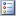

If the Primary and Foreign Key info could not be extracted then the tables are displayed as a simple list and the Primary & Foreign Key icons are not displayed in the Column list.
If the Primary and Foreign Key info could not be extracted then the tables are displayed as a simple list and the Primary & Foreign Key icons are not displayed in the Column list.Displaying Data
When DbSee connects successfully to a Database, it extracts Meta Data (Information about the Tables, Views, Columns and Keys of the Database) from the Database and displays it under the Tables and Views tabs located at the left of the Main Screen.
Tables
If DbSee can extract Primary and Foreign Key information (as in the case of Interbase, MSSQL and Access Databases) then the database's Tables are displayed in a tree list depicting the Master-Detail relationship, up to a depth of 2 - i.e Master ¢ Detail ¢ Sub-Detail.
When you click on a Table in the Tables List, its columns (Fields) are displayed in the panel Table Columns below, listing the Names of the Columns, Data type and size. Primary & Foreign key Columns are highlighted with suitable icons, as illustrated in Table: Column Info.
By default only User Tables are displayed in the Tree List, even if you have opted to include System Tables in DbSee Options. To view System Tables click on the  button (on the Grid Toolbar above the Tree List) and on the drop down menu select System Tables or ALL Tables. The System Tables are now displayed in the List and are highlighted in blue.
If the Primary and Foreign Key info could not be extracted then the tables are displayed as a simple list and the Primary & Foreign Key icons are not displayed in the Column list.
Views
If the Database has any views then they are displayed under the Views tab as a simple list. As in Tables, clicking on a View displays its Columns in the panel View Columns below.
 You can change the display area of the Columns Panel of the Tables or Views by dragging the top edge of the panel up or down.
You can change the display area of the Columns Panel of the Tables or Views by dragging the top edge of the panel up or down.
Use the Grid Toolbar on the Tables Tree Grid and Views Grid to manipulate and control the Grid, as illustrated in Data Grid Features.
Created with the Freeware Edition of HelpNDoc: Free PDF documentation generator